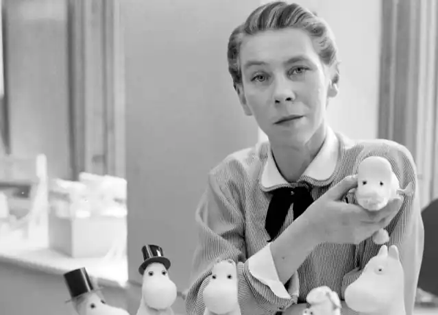
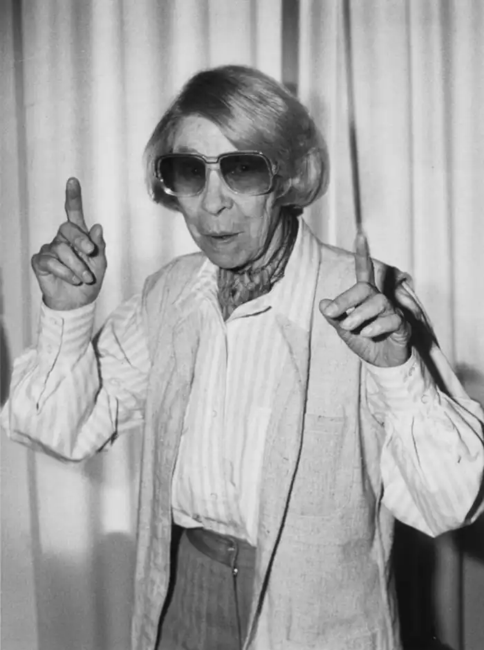

Сторінки життя і творчості
(1914 — 2001)
Фінська письменниця Туве Янсон створила чудові казкові образи — мумі-тролів, які ось уже декілька десятиліть подобаються дітям різних країн. Авторка писала про них шведською мовою, адже у Фінляндії, звідки родом мисткиня, використовуються дві державні мови — фінська і шведська. Вона була багатогранною особистістю, відома не тільки як майстер художнього слова, але і як скульптор, ілюстратор, науковець. Туве Маріка Янсон народилася 9 серпня 1914 р. в столиці Фінляндії м. Гельсінкі. Батько, Віктор Янсон, був скульптором, навчив своєї справи й маленьку Туве. Мати, Сігне Гаммартсен, була популярним дизайнером-графіком, учила дітей малювати. Батьки приділяли багато уваги вихованню дітей. У дружній і творчій родині Янсонів сповідували ідеали свободи, відповідальності, любові й вірності одне одному. Добрі стосунки в сім'ї дали поштовх для створення Туве в подальшому образу родини мумі-тролів та їхніх друзів. Сігне Гаммартсен свого часу була однією з лідерів скаутського руху серед дівчаток, вона захоплювалася греблею, верховою їздою, стрільбою, лижним спортом. Тому не дивно, що кожного літа батьки вивозили дітей на відпочинок на один з островів у Фінській затоці, де Туве разом із братами проводила все літо. Там вони плавали, займалися греблею, рибалили, вивчали світ дикої природи, мандруючи островами затоки. Такий спосіб життя дуже подобався Туве. Ставши дорослою, вона збудувала на острові Клувхару (вона називала його Хару) невеличкий будиночок, протягом тридцяти років поспіль їздила туди, щоб займатися творчістю під шум хвиль і шелест трояндових кущів, що росли біля будинку. Ще в дитинстві, коли сім'я відпочивала біля Фінської затоки, у Т. Янсон виникла ідея намалювати веселу карикатуру на свого братика Ларса у вигляді незграбного бегемотика. Цей образ через багато років стане основним казковим персонажем письменниці. Діти в сімействі Янсонів були дуже дружними, вони все життя допомагали одне одному. Стосунки між сестрою й братами також згодом знайшли відображення в розповідях про мумі-тролів. 1930 р. Т. Янсон переїхала з Гельсінкі до Стокгольма (столиця Швеції), де навчалася в Коледжі мистецтв, ремесла і дизайну. Там вона серйозно займалася малюванням, вивчала художнє оформлення книжок, кераміку. Живучи в домі свого дядька Ейнара, дівчина нерідко залазила до комірчини, шукаючи щось попоїсти. Дядько жартома лякав її злими тролями, які немовби живуть у комірці й охороняють харчі. Однак злих персонажів скандинавського фольклору (які, зазвичай, у легендах шкодять людям) письменниця перетворила на добрих казкових героїв. Вона поселила їх у світі, схожому на реальний, наділила найкращими людськими рисами — добротою, любов'ю, здатністю дружити й підтримувати одне одного. Перша книжка письменниці про мумі-тролів побачила світ 1945 р. Це була повість " Маленькі тролі і великий паводок", яка одразу сподобалася читачам у різних країнах. З того часу вона створила ще п ятнадцять книжок про мумі тролів, які ілюстрували сама та її брати. За свої казкові твори Т. Янсон отримала високі відзнаки різних країн: 1953 р. — премію Нільса Хольгерсона, 1966 р. — медаль Г. К. Андерсена, 1972 р. — премію Шведської академії мистецтв, 1976 р. — золоту президентську медаль Фінляндії, 1993 р. — премію імені Сельми Лагерлеф, 1996 р. — Літературну премію американо-скандинавського культурного фонду. Протягом усього життя письменниця вигадувала історії про мумі-тролів для того, щоб сучасний світ став трохи добрішим і людянішим. З 2002 р. у Фінляндії засновано Літературну премію імені Туве Янсон, яку щороку вручають письменникам, які пишуть для дітей. Книжки популярної фінської авторки перекладено 40 мовами світу, у тому числі й українською — їх переклала на початку 2000-х років Наталя Іваничук. Цікаво знати У м. Наанталі (Фінляндія) збудовано один із найкращих дитячих парків — Долина мумі-тролів, де шанувальники творчості Т" Янсон можуть побачити будиночок казкових персонажів і пройти стежками їхніх пригод. У м. Тампере в приміщенні дитячої бібліотеки знаходиться Музей мумі-тролів. У ньому зібрано понад 2000 ілюстрацій до книжок Т. Янсон, а також малюнки мисткині до інших творів. За книжками Т. Янсон у різних країнах (Росія, Фінляндія, Австрія, Японія, Польща та ін.) створено десятки мультиплікаційних фільмів. Порівняйте їх із тими творами, що ви прочитали.